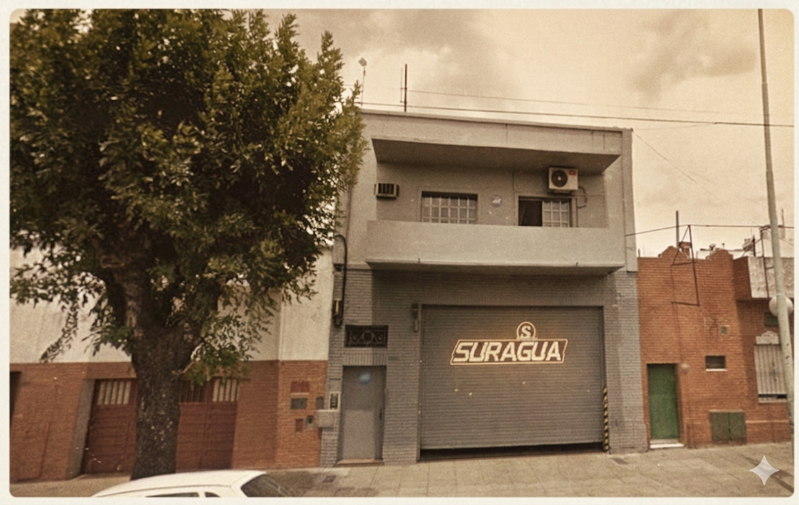
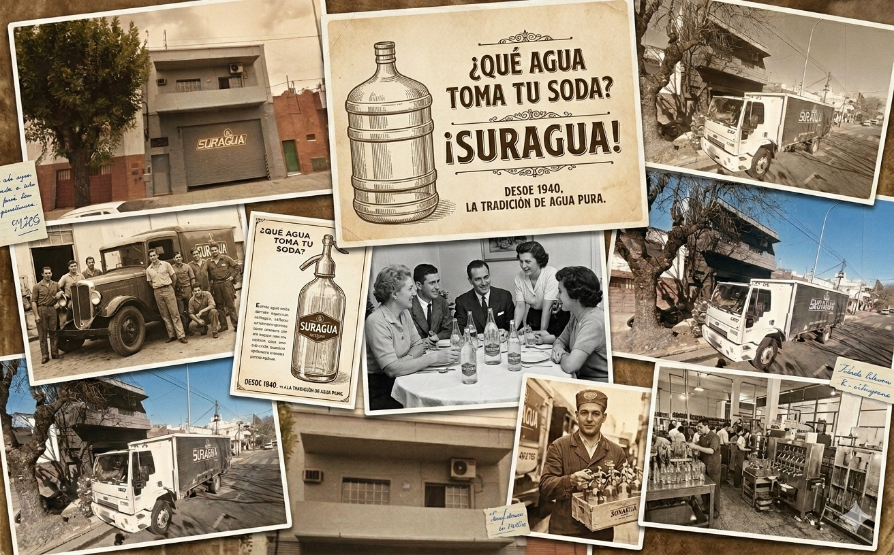
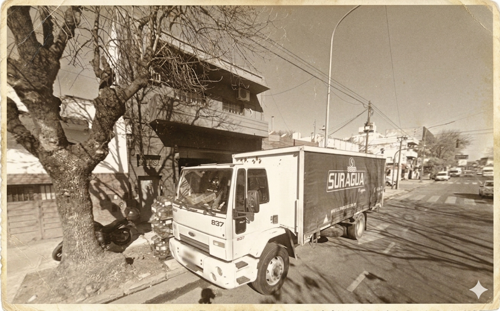

Nuestra Historia
Suragua nació en 1991 como un pequeño emprendimiento familiar con la visión de profesionalizar la distribución de agua envasada en Buenos Aires. A lo largo de tres décadas, hemos crecido junto a nuestros clientes, desde las primeras entregas barriales hasta convertirnos en proveedores estratégicos de las empresas más grandes del país.

Innovación y Calidad
Nuestra planta ha sido pionera en la implementación de sistemas de filtrado por ósmosis inversa y ozonización, garantizando un producto libre de impurezas. Hoy, con más de 30 años de trayectoria, seguimos manteniendo los mismos valores de confianza y puntualidad que nos dieron origen.

